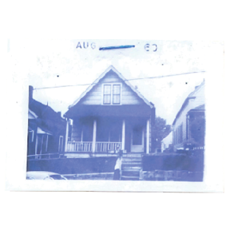
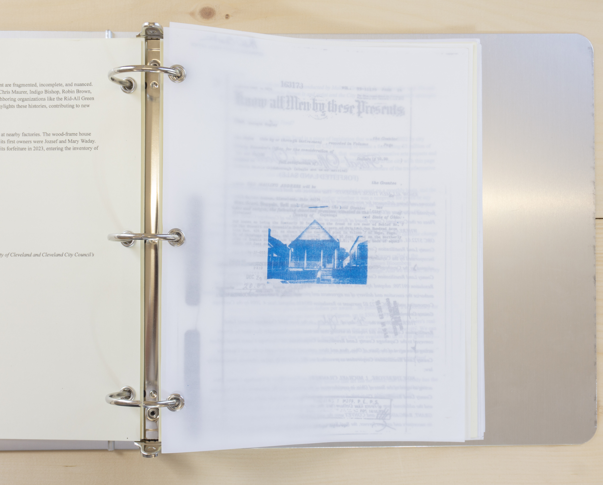
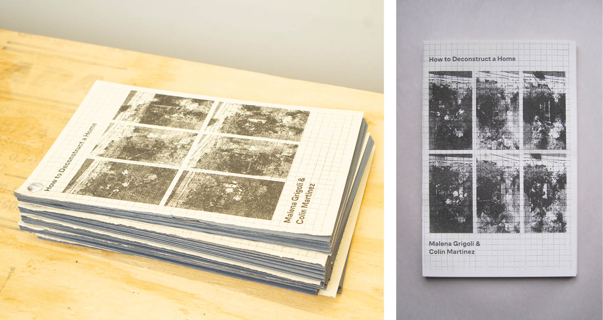
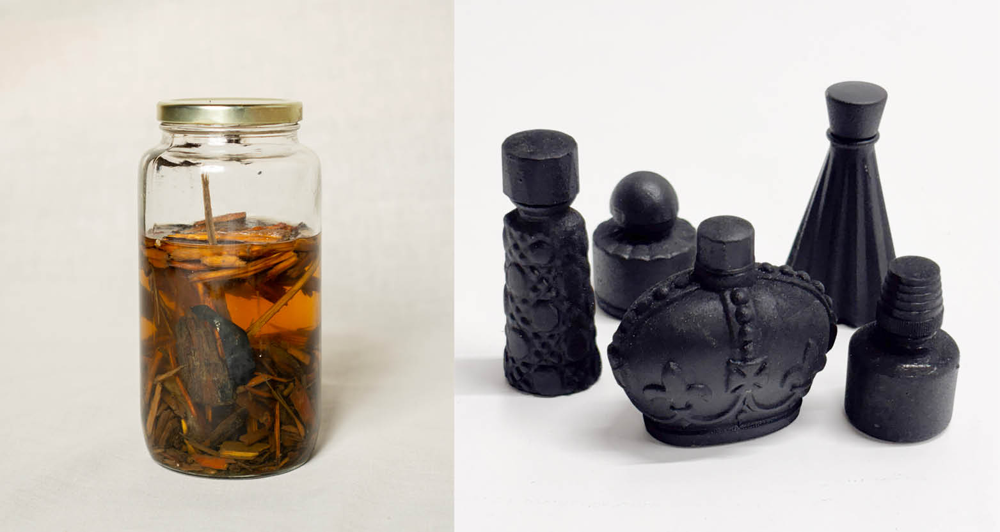

malenagrigoli@gmail . com
@_ma_le.na
9413 sophia ave

9413 sophia ave is both an address and the title of a durational, in situ performance which took place from september 2024 - september 2025.
driven by an interest in the life cycle of structures, 9413 sophia ave operated as a case study with the aim to enact collective maintenance and intentional turnover of a structure through an active exchange with peoples' interest in their own neighborhood.
this social practice work took interest in the relationship between several local environmental justice organizations with focuses on varied aspects of the built environment: indigo bishop of free by design, robin brown of collective citizens organized against lead, jennifer lumpkin of my grow connect, and chris maurer of redhouse studio. 9413 sophia ave sought to engage with the group’s existing working dynamic and use the concept of biocycling as an artistic medium.
biocycling refers to a process of using a waste product – in this case, demolition waste – as a substrate to be bound together by mycelium. the resultant substance can be used as an alternative building material for sculptural or, potentially, structural purposes. the material treatment within 9413 sophia ave is situated in a post-industrial and post-recycling cultural landscape – it aimed to recycle in an active, rather than passive, sense.
the year-long performance of 9413 sophia ave included the choreographed deconstruction and subsequent biocycling of a home which was condemned by the cuyahoga county land bank, resulting, physically, in a participatorily designed installation on the site. by using the concept of biocycling as an artistic medium, the life cycle of a built structure could be considered from myriad perspectives – the material as well as the cultural.
in addition to the physical performance, this work involved two publications — 9413 sophia avenue and how to deconstruct a home — in collaboration with colin martinez, and a forthcoming documentary film by jacob koestler and michael mcdermit of blurry pictures.
this work was made possible through the support of the city of cleveland and cleveland city council’s transformative arts fund, a portion of american rescue plan act funds allotted for public art.



the smell of home distilled the scent of 9413 sophia avenue's material into a perfume. bottled in antique containers, the fragrance has notes of: dirt, petrichor, mildew, sandstone, cedar, metal